[6-2] 定时器定时中断 / 定时器外部时钟 — 学习笔记
- 课程：江协科技《STM32入门教程-2023版 细致讲解 中文字幕》
- 视频：BV1th411z7sn?p=14，38:31（约 2311 秒）
- 素材：257 帧关键帧（每 9 秒，宽 1280px）+ PP-OCRv4 画面硬字幕 OCR（594 段）；关键截图 16 张随笔记收录（源图在
vidsum_out/stm32_p14/frames/，站内图片在assets/images/stm32-14/） - 字幕情况：该集 B 站没有 CC/AI 字幕，文本由画面烧录的中文字幕 OCR 得到（source=subtitle-ocr，有错字已按画面校正，清单见文末「存疑」）。
- 本集定位：这是 [6-1] 的代码课——上一集已经把定时器类型、时基单元、计数模式、时钟源、定时中断结构、时序公式都讲完了（理论见上一集笔记
stm32-13），本集直接写代码，一共两个程序：①6-1 定时器定时中断、②6-2 定时器外部时钟。全程是「复制工程改名 → 新建 Timer 模块 → 写Timer_Init()→ 编译下载 → 看现象 → 改参数做实验」。
一句话结论
本集把 [6-1] 的结构图一步步变成代码：先复制「OLED显示屏」工程改名为 6-1 定时器定时中断，在 System 里新建 Timer.c / Timer.h 模块，然后在 Timer_Init() 里按 七步 配置——① RCC 开 TIM2 时钟（TIM2 在 APB1，必须用 RCC_APB1PeriphClockCmd）→ ② TIM_InternalClockConfig 选内部时钟（默认就是内部时钟，可省）→ ③ TIM_TimeBaseInit 配时基单元（PSC=7200-1、ARR=10000-1，72MHz/7200/10000 = 1Hz 即 1s）→ ④ TIM_ITConfig 允许更新中断输出到 NVIC → ⑤ NVIC_PriorityGroupConfig(2) + NVIC_Init（TIM2_IRQn、抢占 2/响应 1）→ ⑥ TIM_Cmd 启动计数器 → ⑦ 写 TIM2_IRQHandler 中断函数（查 TIM_GetITStatus == SET → 用户代码 → TIM_ClearITPendingBit）；主循环里只需 OLED_ShowNum(1,5,Num,5)，Num 就每秒自己加 1。中间踩了一个经典坑：TIM_TimeBaseInit 末尾有一句 TIMX->EGR = TIM_PSCReloadMode_Immediate，为了让 PSC 立刻生效而手动产生了更新事件，副作用是上电立刻进一次中断、Num 从 1 开始——在 TimeBaseInit 之后、ITConfig 之前加一句 TIM_ClearFlag(TIM2, TIM_FLAG_Update) 解决。第二个程序复制第一个改名，删掉 TIM_InternalClockConfig、改用 TIM_ETRClockMode2Config 走外部时钟模式 2，把对射式红外传感器的 DO 接到 PA0（TIM2_CH1_ETR），别忘了先把 PA0 配成 GPIO 输入，PSC=1-1、ARR=10-1，于是挡光一次 CNT 加 1、加到 9 自动清零并 Num++。
0. 本集定位：代码课，理论见 [6-1]
- 理论部分（定时器类型/时基单元/计数模式/时钟源/定时中断结构/时序公式/RCC 时钟树）在上一集 [6-1] 已全部讲完，本集不重复，只写代码。上一集的关键结论直接拿来用：
- 时基单元 PSC 预分频器 + CNT 计数器 + ARR 自动重装寄存器，溢出频率
CK_CNT_OV = 72MHz/(PSC+1)/(ARR+1)； - 定时中断的信号流向是「时钟源 → 时基单元 → 更新事件/更新中断 → 中断输出控制 → NVIC」；
- TIM2 是 APB1 总线上的通用定时器，但它的内部基准时钟仍是 72MHz；
- PA0 复用
TIM2_CH1_ETR，可作为 TIM2 外部时钟模式 2 的 ETR 引脚。
- 时基单元 PSC 预分频器 + CNT 计数器 + ARR 自动重装寄存器，溢出频率
- 本集两个程序对应上一集片头演示的两个现象：① 内部时钟定时 1s，每秒中断一次 Num++；② 外部时钟（挡光片产生方波）驱动计数器，CNT 计到 9 清零并 Num++。
- 全程是工程操作 + 写代码 + 编译下载 + 看现象，没有新的理论章节。
1. 程序一：接线与工程准备
1.1 接线图：只要一个 OLED
- 打开程序源码里的「接线图」文件夹，看
6-1 定时器定时中断.jpg：这张接线非常简单，只需要插一个 OLED 屏幕，和之前 OLED 显示屏的接线图是一样的。 - 原因：定时器和中断系统的电路都在 STM32 内部，定时中断是为我们程序设计提供服务的，所以芯片外面只需要接一个 OLED 显示数据就行。
- 面包板上实际也是只插好了 OLED 显示屏，其他什么都没有。
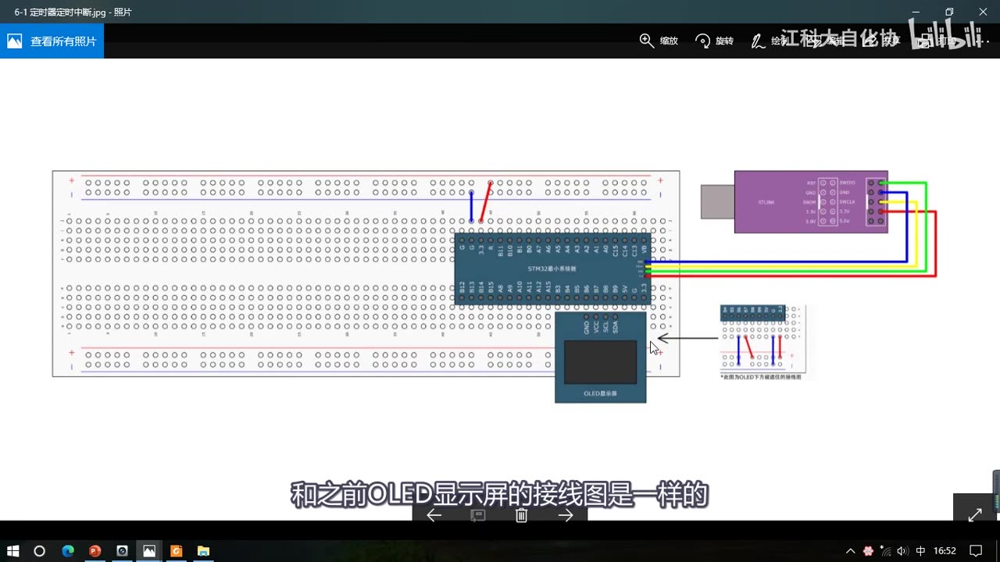
图 1：程序一接线图——最小系统板 + ST-LINK + OLED 屏，定时器和中断电路都在芯片内部，外面只接 OLED 显示数据
1.2 复制工程并改名
- 回到工程文件夹，复制「OLED显示屏」的工程（配套程序里的
4-1 OLED显示屏）； - 改名为
6-1 定时器定时中断，双击.uvprojx打开； - 把 main.c 里演示 OLED 用的那些代码（
OLED_ShowChar、OLED_ShowString、OLED_ShowNum、OLED_ShowSignedNum、OLED_ShowHexNum、OLED_ShowBinNum那一串）先删掉； - 编译一下 ——
0 Error(s), 0 Warning(s)，下载Application running ...，没有问题。
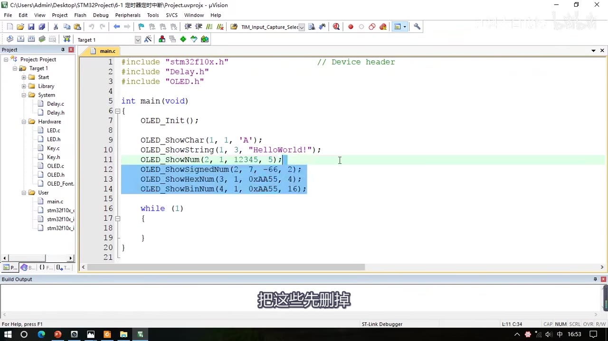
图 2：复制「OLED显示屏」工程并改名为 6-1 定时器定时中断，准备把 main.c 里的 OLED 演示代码删掉
1.3 新建 Timer.c / Timer.h 模块
- 先给定时器建一个模块：在工程管理的
System目录处右键 → Add New Item to Group 'System'。 - 为什么放
System：因为定时器不涉及外部硬件，所以放在System文件夹里；也可以放其他文件夹，工程里的文件夹都是自己建的，怎么放都行。 - 依次建两个文件：
Timer.c：选 C File (.c)，名字Timer，存储路径后面加上\System，Add；Timer.h：再右键 Add New Item，选 Header File (.h)，名字也叫Timer，路径同样加\System，Add。
Timer.h里写固定部分：#ifndef TIMER_H/#define TIMER_H/ … /#endif；再右键添一个头文件，模块就建好了。- 之后老规矩：上来先写一个初始化函数
void Timer_Init(void)，在里面初始化定时器。
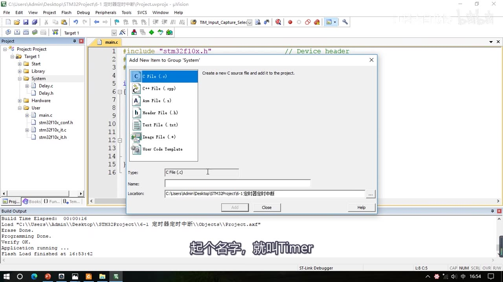
图 3：在 System 组右键 Add New Item，新建 Timer 模块——先建 C 文件（C File），路径加上 \System，名字 Timer
2. 写代码前先认函数：定时器库函数地图
视频先打开 Library\stm32f10x_tim.h 拖到最后，把定时器的库函数过了一遍（数量非常多，本小节先介绍这些常用的）：
2.1 初始化相关
| 函数 | 作用 | 说明 |
|---|---|---|
TIM_DeInit |
恢复缺省配置 | 复位外设 |
TIM_TimeBaseInit(TIMx, &结构体) |
时基单元初始化 | 最重要；结构体里配 PSC/ARR/计数模式等 |
TIM_TimeBaseStructInit(&结构体) |
给结构体赋默认值 | 类似 GPIO_StructInit |
TIM_Cmd(TIMx, NewState) |
使能/失能计数器 | 对应结构图里的「运行控制」；不使能计数器不运行 |
TIM_ITConfig(TIMx, TIM_IT, NewState) |
使能中断输出信号 | 对应「中断输出控制」，TIM_IT 可选 Update/CC1～CC4/COM/Trigger/Break |
2.2 时钟源选择的 6 个函数（对应「时基单元的时钟选择」）
| 函数 | 选择的时钟源 |
|---|---|
TIM_InternalClockConfig(TIMx) |
内部时钟（RCC 的 TIMxCLK，72MHz） |
TIM_ITRxExternalClockConfig(TIMx, InputTriggerSource) |
其他定时器（ITRx，用于级联） |
TIM_TIxExternalClockConfig(TIMx, TIM_TIxExternalCLKSource, Polarity, Filter) |
TIx 捕获通道（某一引脚的边沿） |
TIM_ETRClockMode1Config(TIMx, ExtTRGPrescaler, ExtTRGPolarity, ExtTRGFilter) |
ETR 经外部时钟模式 1 输入的时钟 |
TIM_ETRClockMode2Config(TIMx, ExtTRGPrescaler, ExtTRGPolarity, ExtTRGFilter) |
ETR 经外部时钟模式 2 输入的时钟（本集程序二用这个） |
TIM_ETRConfig(...) |
注意：这个不是用来选择时钟的，是配置 ETR 的预分频/极性/滤波器本身 |
- 对 ETR 输入的外部时钟而言，模式 1 和模式 2 这两个函数是等效的，参数也一样；如果不需要触发输入的功能，两个函数可以互换。
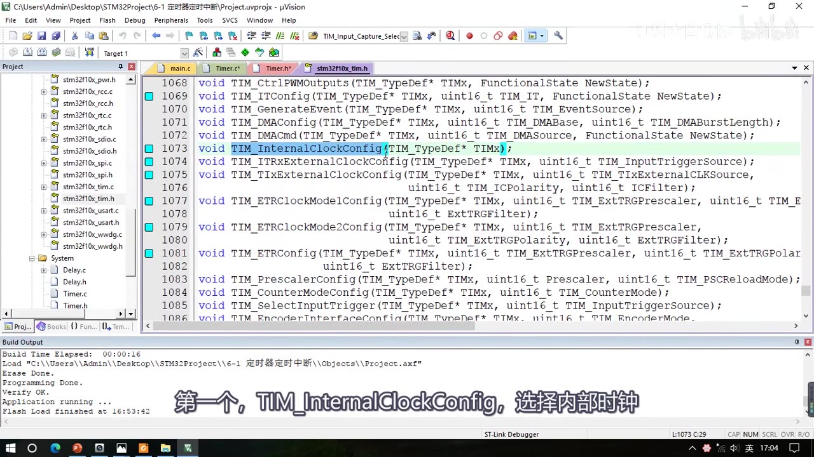
图 4：stm32f10x_tim.h 末尾的库函数——高亮的是时钟源选择相关的 6 个函数（InternalClock / ITRx / TIx / ETR 模式 1 / ETR 模式 2 / ETRConfig）
2.3 单独改关键参数、读写计数器
- 初始化之后还想改 PSC/ARR 这些关键参数，可以用这些单独的函数：
TIM_PrescalerConfig(TIMx, Prescaler, TIM_PSCReloadMode)：单独写预分频值（第二个参数是预分频值 Prescaler，第三个参数TIM_PSCReloadMode才是写入模式；因为 PSC 有缓冲器，写进去的值要等更新事件才生效）；TIM_CounterModeConfig(TIMx, CounterMode)：改计数模式；TIM_ARRPreloadConfig(TIMx, NewState)：ARR 预装功能（ARPE） 使能/失能；TIM_SetCounter(TIMx, Counter)：给计数器写一个值；TIM_SetAutoreload(TIMx, Autoreload)：给自动重装寄存器写一个值；TIM_GetCounter(TIMx)：读当前计数器的值（本集程序二用来显示 CNT）；TIM_GetPrescaler(TIMx)：读当前预分频值。
2.4 标志位 / 中断标志位
- 最后 4 个就是上一节见过的：
TIM_GetFlagStatus/TIM_ClearFlag/TIM_GetITStatus/TIM_ClearITPendingBit——获取标志位和清除标志位，写中断函数时要用。
3. Timer_Init() 七步
3.1 步骤总览
对照 [6-1] 的「定时中断基本结构」图，初始化大体分七步：
- RCC 开启时钟（基本上每个代码的第一步）；
- 选择时基单元的时钟源（定时中断选内部时钟）；
- 配置时基单元（预分频器、自动重装器、计数模式等，用一个结构体配置）；
- 配置中断输出控制，允许更新中断输出到 NVIC；
- 配置 NVIC（上一集用过，流程一样）；
- 运行控制：使能计数器，否则计数器不会运行；
- 写定时器中断函数，这样它就能每隔一段时间自动执行一次。
3.2 ① RCC 开启时钟
RCC_APB1PeriphClockCmd(RCC_APB1Periph_TIM2, ENABLE); // 注意用 APB1！TIM2 是 APB1 总线的外设
- 这里要使用 APB1 的开启时钟函数，因为 TIM2 是 APB1 总线的外设（[6-1] 的表：通用定时器 TIM2～TIM5 挂 APB1；只有高级定时器 TIM1/TIM8 才用 APB2）。
- 打开时钟后，定时器的基准时钟和整个外设的工作时钟就都同时打开了。
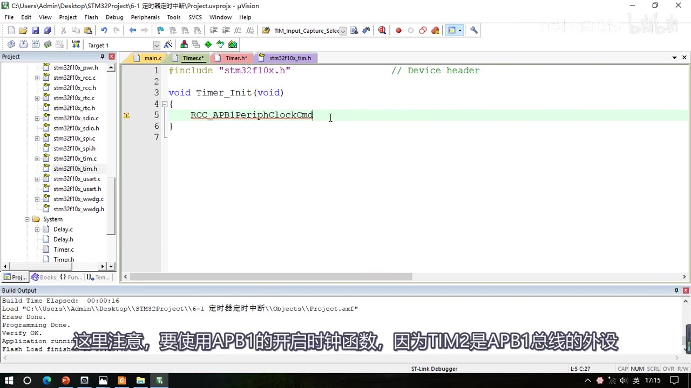
图 5：Timer.c 第一步——RCC_APB1PeriphClockCmd(RCC_APB1Periph_TIM2, ENABLE)，因为 TIM2 是 APB1 总线上的外设
3.3 ② 选择时基单元的时钟源
TIM_InternalClockConfig(TIM2); // 选择内部时钟（72MHz）；这行不写也行，定时器上电默认就是内部时钟
- 参数只有一个 TIMx，写 TIM2，TIM2 的时基单元就由内部时钟驱动。
- 视频特别说明：很多人的代码都不写这个函数，因为定时器上电后默认就是使用内部时钟；但为了步骤完整还是写上了。
3.4 ③ 配置时基单元（TIM_TimeBaseInit）
TIM_TimeBaseInitTypeDef TIM_TimeBaseInitStructure;
TIM_TimeBaseInitStructure.TIM_ClockDivision = TIM_CKD_DIV1; // 时钟分频（给输入滤波器用，跟定时无关）
TIM_TimeBaseInitStructure.TIM_CounterMode = TIM_CounterMode_Up; // 向上计数
TIM_TimeBaseInitStructure.TIM_Period = 10000 - 1; // ARR 自动重装值
TIM_TimeBaseInitStructure.TIM_Prescaler = 7200 - 1; // PSC 预分频值
TIM_TimeBaseInitStructure.TIM_RepetitionCounter = 0; // 重复计数器（高级定时器才用）
TIM_TimeBaseInit(TIM2, &TIM_TimeBaseInitStructure);
- 结构体类型名按惯例从
TIM_TimeBaseInit的函数定义上面那段注释里找，变量名起TIM_TimeBaseInitStructure。 - 第一个参数
TIM_ClockDivision（时钟分频）：这个参数在 [6-1] 讲原理时一直没出现过。它其实跟时基单元关系不大——定时器的外部信号输入引脚上一般有滤波器，滤波器在工作时要在一个固定的采样频率下采样 N 个点，N 个采样值全都相同才输出，否则保持上次输出（或输出低电平）；采样频率可以由内部时钟直接来，也可以由内部时钟加一个时钟分频而来，就是由TIM_ClockDivision决定的。可选值就是 1 分频（TIM_CKD_DIV1）、2 分频、4 分频，这里随便配一个，选 1 分频。 - 第二个参数
TIM_CounterMode（计数器模式）：可选向上计数、向下计数和三种中央对齐模式，这里选向上计数TIM_CounterMode_Up。 - 后三个参数：
TIM_Period= ARR 自动重装器的值；TIM_Prescaler= PSC 预分频器的值；TIM_RepetitionCounter= 重复计数器的值，这是高级定时器才有的，这里用不到，直接给 0。
- 注意这里没有 CNT 计数器的参数——需要的话用
TIM_SetCounter/TIM_GetCounter单独操作。
1 秒是怎么算出来的（用 [6-1] 的公式）：
定时频率 = 72MHz / (PSC + 1) / (ARR + 1)
- 要定时 1s，就是定时频率 1Hz：给 PSC = 7200、ARR = 10000，两个参数都再减 1（因为预分频器和计数器都有 1 个数的偏差）：
72M / 7200 = 10kHz → 10k / 10000 = 1Hz → 1s
- PSC 和 ARR 的取值都要在 0～65535 之间（16 位），不要超范围。
- PSC 和 ARR 的取值不是唯一的：预分频给少点、自动重装给多点，就是「以比较高的频率计比较多的数」；反过来就是「以比较低的频率计比较少的数」，两种都能达到目标定时时间。要么记公式，要么理解工作流程。
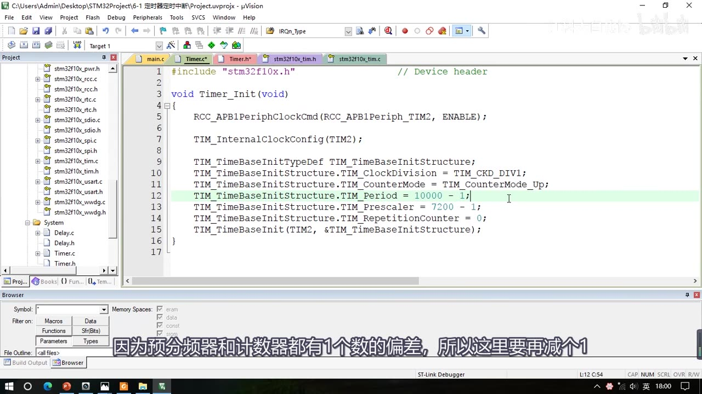
图 6：TIM_TimeBaseInit 的五个参数——ClockDivision=DIV1、CounterMode=Up、Period=10000-1、Prescaler=7200-1、RepetitionCounter=0，即 72MHz/7200/10000 = 1Hz = 1s
3.5 ④ 使能更新中断（TIM_ITConfig）
TIM_ITConfig(TIM2, TIM_IT_Update, ENABLE); // 开启更新中断到 NVIC 的通路
- 参数：TIMx 写 TIM2；TIM_IT 选择要配置哪个中断输出，可以下面这些值任意组合，第一个就是
TIM_IT_Update更新中断；NewState 直接ENABLE。 - 这样就开启了更新中断到 NVIC 的通路（对应结构图里的「中断输出控制」）。
3.6 ⑤ 配置 NVIC
NVIC_PriorityGroupConfig(NVIC_PriorityGroup_2); // 优先级分组选分组 2
NVIC_InitTypeDef NVIC_InitStructure;
NVIC_InitStructure.NVIC_IRQChannel = TIM2_IRQn; // 定时器 2 在 NVIC 里的通道
NVIC_InitStructure.NVIC_IRQChannelCmd = ENABLE;
NVIC_InitStructure.NVIC_IRQChannelPreemptionPriority = 2; // 抢占优先级
NVIC_InitStructure.NVIC_IRQChannelSubPriority = 1; // 响应优先级
NVIC_Init(&NVIC_InitStructure);
- NVIC 上一集已经讲过，这里直接写：先
NVIC_PriorityGroupConfig(NVIC_PriorityGroup_2)选分组 2，再NVIC_InitTypeDef NVIC_InitStructure配置通道。 - 通道从
IRQn_Type枚举里找，在列表里选中TIM2_IRQn——这就是定时器 2 在 NVIC 里的通道；抢占/响应优先级给 2 和 1。
3.7 ⑥ 启动定时器（TIM_Cmd）
TIM_Cmd(TIM2, ENABLE); // 使能计数器
- 第一个参数 TIM2，第二个
ENABLE。这样定时器才开始工作，产生更新时就会触发中断。到这里定时中断的初始化代码就完成了。
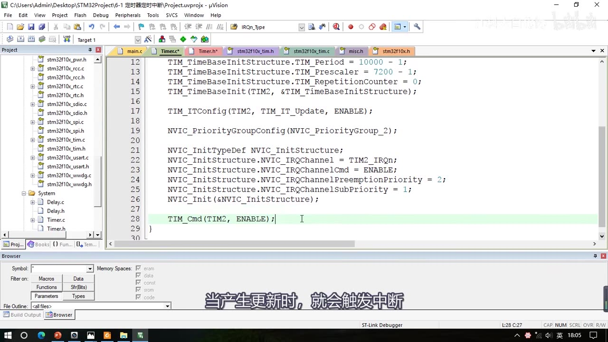
图 7：初始化后半段——TIM_ITConfig 开更新中断、NVIC_PriorityGroupConfig(分组 2)、NVIC_Init（TIM2_IRQn、抢占 2/响应 1）、最后 TIM_Cmd(TIM2, ENABLE) 启动
3.8 ⑦ 中断函数 TIM2_IRQHandler
void TIM2_IRQHandler(void)
{
if (TIM_GetITStatus(TIM2, TIM_IT_Update) == SET) // 检查更新中断标志位
{
Num ++; // 用户代码
TIM_ClearITPendingBit(TIM2, TIM_IT_Update); // 清除更新中断标志位（画面里在 if 内）
}
}
- 函数名从哪来：打开工程里的启动文件（
startup_stm32f10x_md.s）找，定时器 2 的中断函数就是TIM2_IRQHandler——当定时器产生更新中断时，这个函数就会自动被执行。（这一版先写在Timer.c里；后面 4.3 会把它挪到 main.c。） - 进函数后按规矩：先用
TIM_GetITStatus检查中断标志位（第一个参数 TIM2，第二个想看哪个中断的标志位，这里选TIM_IT_Update），如果 == SET 就执行用户代码；最后别忘了TIM_ClearITPendingBit(TIM2, TIM_IT_Update)清除标志位。 - 写完别忘了把初始化函数的声明放进
Timer.h（void Timer_Init(void);）。
4. 中断函数与跨文件变量
4.1 主函数：调用初始化 + 显示 Num
#include "stm32f10x.h"
#include "Delay.h"
#include "OLED.h"
#include "Timer.h"
uint16_t Num; // 16 位全局变量，中断里 ++，主循环里显示
int main(void)
{
OLED_Init();
Timer_Init(); // 初始化定时器
OLED_ShowString(1, 1, "Num:");
while (1)
{
OLED_ShowNum(1, 5, Num, 5); // 循环刷新 Num
}
}
4.2 跨文件变量：直接写会报错
- 想让定时器每秒自动给 Num 加 1，Num 就要在中断函数里
Num++；但这个中断函数在 Timer 模块里，Num 定义在 main.c 里——这就成了跨越不同 .c 文件的变量，直接写Num++编译会报错：
System\Timer.c(35): error: #20: identifier "Num" is undefined
- 方案一：用
extern声明。 在使用变量的那个文件的上面（Timer.c 开头）写：
extern uint16_t Num; // 告诉编译器：Num 这个变量在别的文件里定义，你自己去找
extern声明变量，就是告诉编译器「我现在有 Num 这个变量，它在别的文件里定义了，至于在哪里，你自己去找吧」，然后编译器就会去找。- 顺带一提：头文件里的函数声明其实也是用
extern实现的（函数前面本来就有一个extern，只是这个extern可以省略，所以一般不写）。
4.3 方案二：把中断函数复制到 main.c（视频最终采用）
- 第二种方案：直接把这个中断函数复制一下，放到主函数后面，这样它们就在一个文件里了，
extern声明就不需要了。 - 于是把 Timer.c 里的中断函数注释掉，留作「中断函数模板」，哪个文件想用就复制过去：
void TIM2_IRQHandler(void) // 主函数每秒自动把 Num++
{
if (TIM_GetITStatus(TIM2, TIM_IT_Update) == SET)
{
Num ++;
TIM_ClearITPendingBit(TIM2, TIM_IT_Update);
}
}
- 视频解释：对于定时中断而言，这个中断函数就是为别的文件服务的，所以中断函数可以放在使用它的地方、这样更方便。
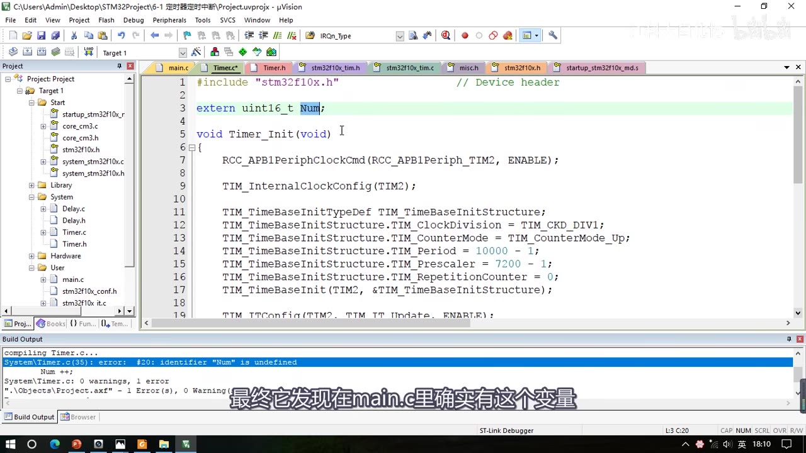
图 8：跨文件使用变量报错——System\Timer.c(35): error: #20: identifier "Num" is undefined，在 Timer.c 上方加 extern uint16_t Num; 即可（方案一）
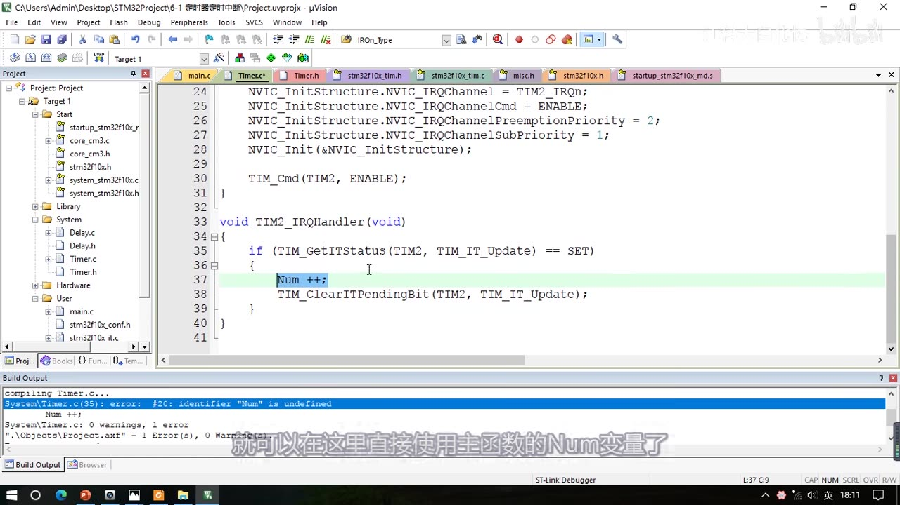
图 9：Timer.c 里的 TIM2_IRQHandler（方案二之前，中断函数还写在 Timer.c 中；第 3 行是 extern uint16_t Num;，Build Output 仍报 identifier "Num" is undefined）
5. 现象验证：一个经典坑
5.1 现象①：Num 每秒 +1
- 编译下载后可以看现象：Num 的值正在执行每秒加 1 的操作。
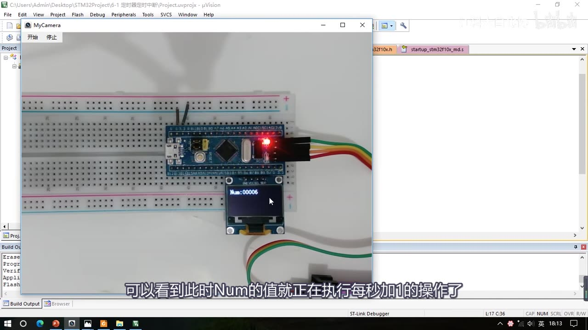
图 10：现象①——OLED 显示 Num:00006，每过 1 秒数字自动加 1（主循环只负责刷新，计数全在更新中断里做）
5.2 坑：复位后 Num 从 1 开始
- 但是这里有个问题：按复位键复位一下，会发现 Num 是从 1 开始计数的；多复位几次，每次程序刚一开始，Num 就立刻变成 1 了。
- 按理说 Num 的初始值是 0，应该从 0 开始计数，但一上电就立刻变为 1——这说明中断函数在初始化之后就立刻进入了一次。
5.3 原因：TimeBaseInit 末尾的 EGR 手动更新事件
- 打开
TIM_TimeBaseInit函数，在最后可以看到这一句：
/* Generate an update event to reload the Prescaler and the Repetition counter
values immediately */
TIMX->EGR = TIM_PSCReloadMode_Immediate;
- 为什么要加这一句：预分频器有缓冲寄存器，我们写的值只有在更新事件时才真正起作用；所以为了让值立刻生效，就在这里手动生成了一个更新事件，这样预分频器的值就有效了。
- 但它的副作用是：更新事件和更新中断是同时发生的——更新中断会置更新中断标志位，这就是刚一上电就立刻进中断的原因。
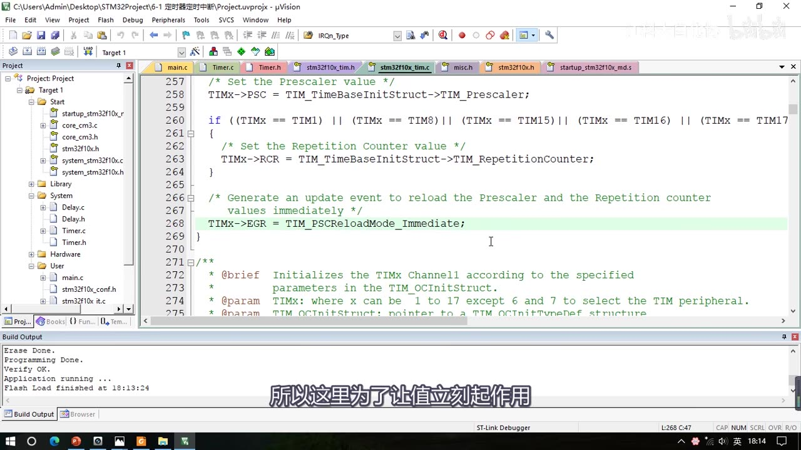
图 11：坑的根源——TIM_TimeBaseInit 末尾的 TIMX->EGR = TIM_PSCReloadMode_Immediate;（注释：产生一个更新事件，立刻重装预分频器和重复计数器的值）
5.4 修复：TimeBaseInit 之后、ITConfig 之前清一次标志
TIM_TimeBaseInit(TIM2, &TIM_TimeBaseInitStructure);
TIM_ClearFlag(TIM2, TIM_FLAG_Update); // ★ 手动清除更新标志位，避免刚初始化完就进中断
TIM_ITConfig(TIM2, TIM_IT_Update, ENABLE); // 然后再开启更新中断
- 解决方案非常简单：在
TIM_TimeBaseInit的后面、开启中断的前面，手动调用一下TIM_ClearFlag(TIM2, TIM_FLAG_Update)，把更新中断标志位清除掉，就能避免刚初始化完就进中断的问题。 - 修复后再下载：上电后数字从 0 开始增加，没问题了。
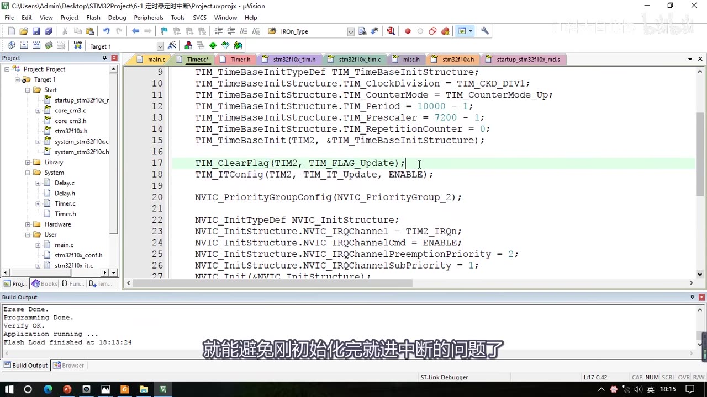
图 12：修复——在 TimeBaseInit 之后、TIM_ITConfig 之前加一句 TIM_ClearFlag(TIM2, TIM_FLAG_Update);
5.5 观察 CNT：计数器值在 0～9999 之间飞速变化
OLED_ShowNum(2, 5, TIM_GetCounter(TIM2), 5); // 在主循环里读 CNT 并显示
- 加这一行后下载，可以看到下面这个计数器的值在飞速变化，变化范围从 0 一直到自动重装值——ARR 写的是 10000-1，所以从 0 自增到 9999，总共 10000 个数；计 10000 次就是 1s。
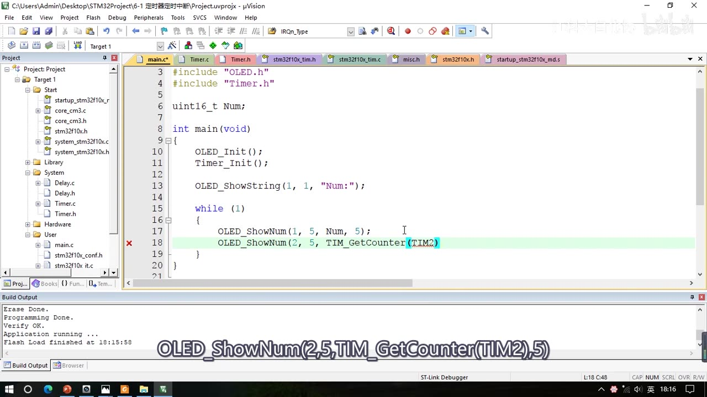
图 13：主循环里加 OLED_ShowNum(2, 5, TIM_GetCounter(TIM2), 5) 观察 CNT——在 0～9999 之间飞速循环（10000 个数 = 1s）
5.6 改 PSC/ARR 的实验：中断频率怎么变
- 实验一：把 Period 改小——
TIM_Period从10000 - 1改成1000 - 1，中断周期变成 0.1s，CNT 在 0～999 之间循环，上面 Num++ 的速度也比原来快了 10 倍。 - 实验二：把 Prescaler 改小——把
TIM_Prescaler从7200 - 1改成720 - 1、Period 还是10000 - 1：这就是以原来 10 倍的计数频率计 10000 个数，Num++ 的速度同样是原来的 10 倍。 - 这就是预分频值和自动重装值对中断频率的影响，之后还会经常和它们打交道，可以多玩一玩这部分（实验完记得把值改回来）。
6. 程序二：定时器外部时钟
6.1 接线：对射式红外传感器 DO → PA0
- 打开接线图文件夹里的
6-2 定时器外部时钟.jpg：右下角是一个 OLED 显示屏，上面接了一个对射式红外传感器，它的 DO（数字输出）接到 PA0 引脚。 - PA0 引脚就是 TIM2 的 ETR 引脚（[6-1] 引脚定义表里 PA0 =
TIM2_CH1_ETR），我们就在这个引脚上输入一个外部时钟。 - 面包板上接线：传感器接 3 根杜邦线，VCC → 正极、GND → 负极、DO → PA0，这样就好了。
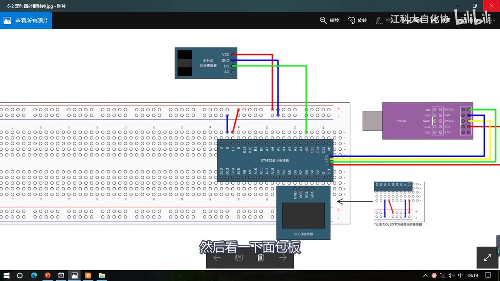
图 14：程序二接线图——最小系统板 + OLED + 对射式红外传感器，VCC→正极、GND→负极、DO→PA0（PA0 即 TIM2 的 ETR 引脚）
6.2 复制工程并改配置
- 复制
6-1 定时器定时中断工程，改名6-2 定时器外部时钟，在这个工程的基础上改：- 基本任务仍然是定时中断，只是时钟部分不再使用内部时钟；
- 把
TIM_InternalClockConfig(TIM2)这一行删掉； - 到
stm32f10x_tim.h里找选择时钟的函数，复制TIM_ETRClockMode2Config（通过 ETR 引脚的外部时钟模式 2 配置）放到原来的位置。
TIM_ETRClockMode2Config(TIM2, TIM_ExtTRGPSC_OFF, TIM_ExtTRGPolarity_NonInverted, 0x00);
- 参数一：TIM2。
- 参数二
TIM_ExtTRGPrescaler（外部触发预分频器）：可以是TIM_ExtTRGPSC_OFF（关闭预分频）、DIV2、DIV4、DIV8，即对 ETR 外部时钟再提前做一次分频；这里不需要分频，选TIM_ExtTRGPSC_OFF。 - 参数三
TIM_ExtTRGPolarity（外部触发极性）：TIM_ExtTRGPolarity_Inverted是反向（低电平或下降沿有效）；TIM_ExtTRGPolarity_NonInverted是不反向（高电平或上升沿有效）。按需求来，这里选不反向。 - 参数四
ExtTRGFilter（外部触发滤波器）：值必须是0x00～0x0F之间的一个值。滤波器就是「以一个采样频率 f 采样 N 个点、N 个点都一样才有效输出」，这个值就是用来决定 f 和 N 的——手册里 ETF[3:0] 那几位给了对应表（例：0000无滤波器、按 f_DTS 采样；其余编码分别对应不同的采样频率与采样点数 N=2/4/6/8），旁边的 ETPS[1:0] 则决定 ETRP 的外部触发预分频。这里暂时不用滤波器，写0x00就行。
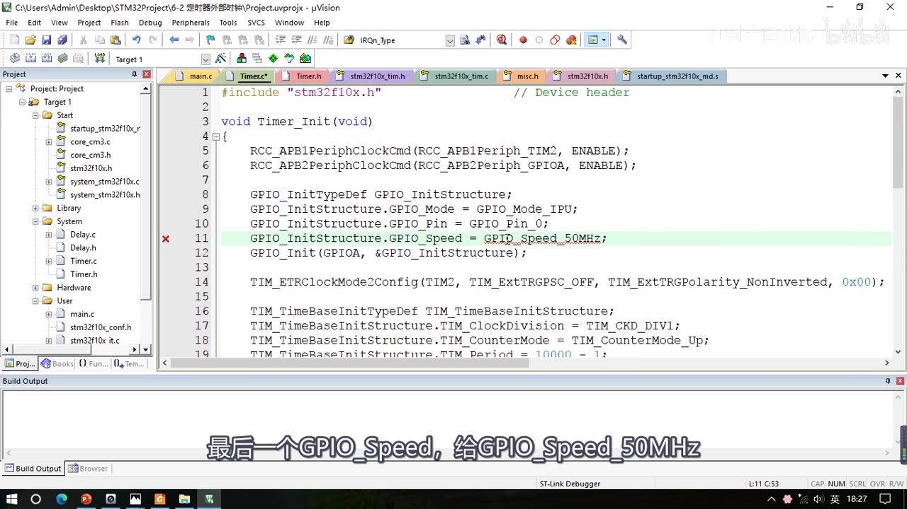
图 15：程序二的 Timer_Init——先 RCC 开 TIM2 与 GPIOA 时钟、把 PA0 配成上拉输入（IPU）、再用 TIM_ETRClockMode2Config(TIM2, TIM_ExtTRGPSC_OFF, TIM_ExtTRGPolarity_NonInverted, 0x00) 选外部时钟模式 2（图中 TIM_Period 仍是 6-1 的 10000-1，稍后改小）
6.3 别忘了配 GPIO：PA0 上拉输入
- 引脚要用到 GPIO，所以在这之前还要先配置 GPIO：
RCC_APB2PeriphClockCmd(RCC_APB2Periph_GPIOA, ENABLE); // 开启 GPIOA 时钟（GPIO 挂 APB2）
GPIO_InitTypeDef GPIO_InitStructure;
GPIO_InitStructure.GPIO_Mode = GPIO_Mode_IPU; // 上拉输入
GPIO_InitStructure.GPIO_Pin = GPIO_Pin_0; // PA0
GPIO_InitStructure.GPIO_Speed = GPIO_Speed_50MHz;
GPIO_Init(GPIOA, &GPIO_InitStructure);
GPIO_Mode查手册的配置表：这一栏（TIMx 的 ETR 输入）推荐配置是浮空输入。视频这里给了上拉输入，也是可以的。- 什么时候要用浮空输入：如果外部输入信号功率很小，内部的上拉电阻可能会影响这个输入信号，这时就可以用浮空输入，防止影响外部输入的电平。
6.4 改小 PSC/ARR，封装读 CNT 的函数
TIM_TimeBaseInitStructure.TIM_Period = 10 - 1; // ARR = 9：从 0 计到 9
TIM_TimeBaseInitStructure.TIM_Prescaler = 1 - 1; // PSC = 0：不分频
- 预分频和自动重装值也要改小一点，因为手动模拟的外部时钟没那么快：预分频给
1 - 1（即 0，不分频），自动重装值给10 - 1（即 9，从 0 计到 9）。 - 想实时看 CNT 的值，把读计数器的函数也封装一下（规范一些），并在
Timer.h里声明：
uint16_t Timer_GetCounter(void)
{
return TIM_GetCounter(TIM2);
}
6.5 主程序显示 Num 与 CNT
uint16_t Num;
int main(void)
{
OLED_Init();
Timer_Init();
OLED_ShowString(1, 1, "Num:");
OLED_ShowString(2, 1, "CNT:");
while (1)
{
OLED_ShowNum(1, 5, Num, 5); // 第 1 行显示 Num
OLED_ShowNum(2, 5, Timer_GetCounter(), 5); // 第 2 行显示 CNT
}
}
- 编译下载，上面是 Num、下面是 CNT 计数器的值。
6.6 现象②：挡光一次 CNT+1，到 9 清零并 Num++
- 用挡光片挡一下：CNT 加 1——因为现在时基单元没有预分频，所以每次遮挡（产生一个方波边沿）CNT 都会加 1；如果有预分频，就要遮挡几次才加一次。
- CNT 加到 9 之后自动清零，同时申请中断，
Num++。
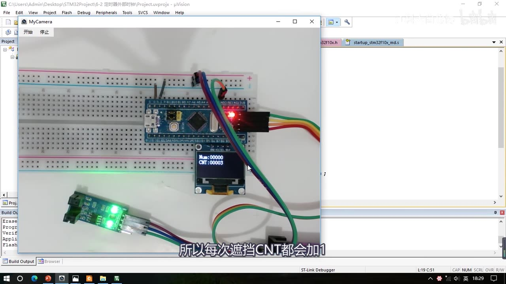
图 16：现象②——OLED 上排 Num:00000、下排 CNT:00003；挡光一次 CNT 加 1，加到 9 自动清零并进入更新中断让 Num++
- 预分频器、极性这些参数都可以自己换一换看现象；
stm32f10x_tim.h里其他一些时钟输入（ITRx 级联、TIx 捕获通道等）也都可以自己试一试，视频不再一一演示。
7. 坑与易错点
- TIM2 用
RCC_APB1PeriphClockCmd开时钟：因为 TIM2 是 APB1 总线上的外设；写成 APB2 是开不了 TIM2 时钟的（只有 TIM1/TIM8 在 APB2）。 - PSC/ARR 都要「减 1」：寄存器值 = 分频系数 − 1、周期数 − 1；写
7200是 7201 分频。范围 0～65535，别超。 TIM_InternalClockConfig可以省：定时器上电默认就是内部时钟；但为了步骤完整写上也没问题。TIM_RepetitionCounter是高级定时器才用的，基本/通用定时器给 0 就行。TIM_ClockDivision跟定时时间无关：它只决定输入滤波器的采样频率，随便配（本集 DIV1）。- 上电 Num 从 1 开始 =
TIM_TimeBaseInit里的 EGR 手动更新事件副作用：在 TimeBaseInit 后、ITConfig 前加TIM_ClearFlag(TIM2, TIM_FLAG_Update)就好了。 - 跨文件用变量要
extern：extern uint16_t Num;写在用它的 .c 开头；或者干脆把中断函数复制到 main.c（本集最终采用，Timer.c 那份注释留作模板）。注意头文件的函数声明本来就带隐藏的extern，所以不用写。 - 中断函数名必须和启动文件里的向量名一致：定时器 2 是
TIM2_IRQHandler，写错（拼错/大小写）不会报错但中断永远不进。 - 中断里必须清标志位：
TIM_ClearITPendingBit(TIM2, TIM_IT_Update)，否则会反复进中断。 - 程序二：删了
TIM_InternalClockConfig之后一定要补外部时钟模式 2 的配置，同时别忘了先开 GPIOA 时钟、把 PA0 配成输入——只配定时器不配 GPIO，外部时钟根本进不来。 TIM_ETRClockMode2Config的第四个参数（滤波器）只能是0x00～0x0F，超出范围是无效的。- 外部时钟下
PSC=0就是「每个边沿计一次」：挡一次光 CNT+1；开了预分频就变成「挡 N 次才加一次」。 TIM_ETRClockMode1Config与TIM_ETRClockMode2Config对 ETR 时钟是等效的：不需要触发输入功能时可以互换。- 实验完记得把修改过的 PSC/ARR 改回来，否则下一个程序的现象会「莫名其妙变快/变慢」。
时间轴
| 时间 | 内容 |
|---|---|
| 0:06 | 开始：先看接线图，打开程序源码「接线图」文件夹里的 6-1 定时器定时中断图片 |
| 0:19 | 程序一接线很简单，只需要插一个 OLED；定时器和中断电路都在 STM32 内部 |
| 0:38 | 面包板上已插好 OLED，回到工程文件夹开始写代码 |
| 0:50 | 复制「OLED显示屏」工程，改名 6-1 定时器定时中断，删掉原代码后编译下载正常 |
| 1:31 | 给定时器建模块：System 目录右键 Add New Item（定时器不涉及外部硬件，放 System） |
| 1:59 | 新建 C 文件 Timer，路径加 \System；2:11 再建 Timer.h，2:22 写 #ifndef TIMER_H 固定部分 |
| 2:42 | 写初始化函数 void Timer_Init(void)；2:58 对照 [6-1] 的定时中断结构图整理步骤 |
| 3:15 | 步骤：① RCC 开时钟 ② 选时基单元时钟源 ③ 配时基单元 ④ 配中断输出控制 ⑤ NVIC（上一集讲过）⑥ 运行控制 ⑦ 中断函数 |
| 3:56 | 说明第五步 NVIC 上一集用过；第六步 TIM_Cmd；使能计数器后才开始计数、更新时触发中断 |
| 4:27 | 打开 stm32f10x_tim.h 看库函数：TIM_DeInit、TIM_TimeBaseInit（最重要） |
| 5:29 | 用书签标记常用的库函数（跳转/清除书签）；6:26 TIM_TimeBaseStructInit |
| 6:39 | TIM_Cmd 使能计数器（对应运行控制）；7:04 TIM_ITConfig 使能中断输出信号 |
| 7:44 | 时钟源 6 个函数：InternalClock（8:04）、ITRx（8:19）、TIx（8:41）、ETR 模式 1（9:05）、ETR 模式 2（9:39）、ETRConfig（10:05，不是选时钟的） |
| 9:55 | ETR 模式 1 与模式 2 对时钟输入等效、参数一样，不需要触发输入时可以互换 |
| 10:17 | 函数小结：时钟源 6 个、时基单元 TimeBaseInit、中断输出 ITConfig、NVIC_Init、运行控制 TIM_Cmd |
| 10:45 | 单独改参数的函数：TIM_PrescalerConfig（11:07）、TIM_CounterModeConfig、TIM_ARRPreloadConfig（12:02）、TIM_SetCounter/SetAutoreload（12:21）、TIM_GetCounter（12:43）、TIM_GetPrescaler（12:50） |
| 12:59 | 四个标志位/中断标志位函数（GetFlagStatus/ClearFlag/GetITStatus/ClearITPendingBit） |
| 13:17 | 开始配置：初始化 TIM2，第一步 RCC_APB1PeriphClockCmd(RCC_APB1Periph_TIM2, ENABLE)（TIM2 是 APB1 外设） |
| 13:56 | 第二步选择时基单元时钟：TIM_InternalClockConfig(TIM2)；14:17 说明不写也行，默认内部时钟 |
| 14:33 | 第三步配置时基单元：TIM_TimeBaseInit 结构体，从函数定义注释里找类型名 |
| 15:33 | ClockDivision：跳转看注释「指定时钟分频」，讲输入滤波器采样原理（15:51～16:38） |
| 16:46 | 采样频率可由内部时钟直接来或加时钟分频，由 ClockDivision 决定，与时基单元关系不大 |
| 17:15 | Ctr+F 搜参数值：DIV1 / DIV2 / DIV4，选 1 分频；17:30 CounterMode 选向上计数 |
| 18:10 | Period=ARR、Prescaler=PSC、RepetitionCounter（高级定时器才有，给 0）；没有 CNT 参数 |
| 18:52 | 1s 计算：PSC=7200、ARR=10000，两个都再减 1；19:36 两值都要在 0～65535，且取值不唯一 |
| 20:01 | 预分频对 72M 做 7200 分频得 10K，10K 下计 10000 个就是 1s |
| 20:18 | TIM_ITConfig(TIM2, TIM_IT_Update, ENABLE) 开更新中断到 NVIC 通路 |
| 21:02 | NVIC：NVIC_PriorityGroupConfig(NVIC_PriorityGroup_2)，NVIC_Init（TIM2_IRQn、ENABLE、抢占 2/响应 1） |
| 22:23 | 第六步 TIM_Cmd(TIM2, ENABLE) 启动定时器，产生更新时触发中断 |
| 22:51 | 写中断函数：启动文件里找 TIM2_IRQHandler；23:16 TIM_GetITStatus 检查 TIM_IT_Update |
| 23:49 | == SET 执行用户代码，最后 TIM_ClearITPendingBit 清除标志位；24:05 头文件声明并编译 |
| 24:17 | 主函数 include Timer.h 并调用 Timer_Init；24:32 定义全局变量 uint16_t Num |
| 24:45 | Num 跨文件使用报错 identifier "Num" is undefined；25:03 extern 声明解决（头文件函数声明也是 extern） |
| 26:16 | 第二种方案：把中断函数复制到 main.c，Timer.c 里那份注释留作模板 |
| 27:01 | 主循环 OLED_ShowNum(1,5,Num,5) 循环刷新，编译下载 |
| 27:36 | 现象①：Num 每秒 +1；27:42 复位后发现 Num 从 1 开始 |
| 28:11 | 打开 TIM_TimeBaseInit，末尾 TIMX->EGR = TIM_PSCReloadMode_Immediate 为了 PSC 立刻生效手动产生更新事件 |
| 28:43 | 副作用：更新事件同时置更新中断标志 → 上电立刻进一次中断 |
| 28:58 | 解决：TimeBaseInit 后、ITConfig 前 TIM_ClearFlag(TIM2, TIM_FLAG_Update)；29:40 修复后从 0 开始 |
| 29:47 | 主循环加 OLED_ShowNum(2,5,TIM_GetCounter(TIM2),5) 观察 CNT，0～9999 飞速变化（共 10000 个数 = 1s） |
| 30:33 | 实验一：Period 改成 1000-1 → 0.1s，CNT 0～999，Num++ 快 10 倍 |
| 31:03 | 实验二：Prescaler 改成 720-1（10 倍计数频率计 10000 个数），Num++ 也快 10 倍 |
| 31:29 | 改回原值；31:39 开始第二个程序，先看接线图 6-2 定时器外部时钟 |
| 32:00 | 接线：OLED + 对射式红外传感器，DO→PA0（PA0 是 TIM2 的 ETR 引脚） |
| 32:20 | 面包板接线：VCC→正极、GND→负极、DO→PA0；32:34 复制 6-1 工程改名 6-2 |
| 32:53 | 删掉 TIM_InternalClockConfig，改用 TIM_ETRClockMode2Config（外部时钟模式 2） |
| 33:32 | ETR 参数：外部触发预分频选 OFF；33:48 极性——反向（低电平/下降沿）、不反向（高电平/上升沿）选不反向 |
| 34:06 | 滤波器参数 0x00~0x0F（采样频率 f 采 N 点，手册 ETF/ETPS 表），不用滤波器写 0x00 |
| 34:43 | 引脚要用 GPIO：RCC_APB2PeriphClockCmd(RCC_APB2Periph_GPIOA)；35:06 配 GPIO_Init 结构体 |
| 35:29 | 手册推荐浮空输入；外部输入信号功率小时用浮空避免内部上拉影响，这里用上拉输入 |
| 36:05 | GPIO_Mode_IPU、GPIO_Pin_0、GPIO_Speed_50MHz；36:24 改小 PSC/ARR：Prescaler=1-1、Period=10-1 |
| 36:37 | 封装 uint16_t Timer_GetCounter(void) 并写进头文件；37:07 编译，main.c 显示 Num 与 CNT 两行 |
| 37:41 | 下载后现象：上排 Num、下排 CNT；37:46 挡光一次 CNT+1，到 9 清零并 Num++ |
| 38:07 | 无预分频时每次遮挡都加 1；有预分频则挡几次才加一次；参数可自己换着试 |
| 38:24 | 本小节代码部分结束 |
存疑
- 本集文本来自画面硬字幕的 OCR（PP-OCRv4，source=subtitle-ocr，594 段），不是 ASR。典型 OCR 错字（本集实际出现）：
计数器模式→ 「试数模式」、TIM_DeInit→ 「TMDelnit」、TIM_TimeBaseInit→ 「TMTimeBaselnit」、TIM_ITConfig→ 「TIMITConfig」、TIM_ETRClockMode2Config→ 「TIMETRClockMode2Config」、外部时钟→ 「外陪时钟」、extern→ 「extem/exterm」、PA0→ 「PAO」、比如→ 「此如」、申请→ 「电请」等，已按画面和上下文校正。 - 字幕在手册截图段落（约 34:20–34:37）夹带了手册正文乱码（如「16位向上、向下、向上/向下自动装载计数器」「101：比较－OC2REF信号被用于作为触发输出(TRGO)」「基本44.19TM存图」等），本笔记只引用了画面能看清的滤波器说明（ETF[3:0]/ETPS[1:0]）。
- 第一个实验「改 Period」：字幕 OCR 出「从 0 加到 1999」，但画面里
TIM_Period写的是1000 - 1（f_00205，30:36 一帧），按 72MHz/7200/1000 = 10Hz 应为 0.1s、CNT 0～999，本笔记按画面写 0～999，字幕的「1999」判断为 OCR 错误。 - 第二个实验的
Prescaler = 720 - 1与「以原来 10 倍的计数频率计 10000 个数」由 31:03 一帧的画面确认（Period = 10000 - 1、Prescaler = 720 - 1）。 - 程序二里「预分频就给 1」的口述与画面不一致：画面写的是
TIM_Prescaler = 1 - 1（即 0，不分频），本笔记按画面记1 - 1。 Timer.h的宏名按字幕记作TIMER_H（标准写法常带下划线如__TIMER_H）；该细节画面滚动太快，未逐字核对。- 程序二截图（图 15）来自 36:18 一帧，此时
TIM_Period还是 6-1 的10000-1；视频在 36:24 之后才把它改成10-1、并把TIM_Prescaler改成1-1，图注已注明这一点。 - 中断函数里
TIM_ClearITPendingBit的位置按画面写在if块内（判断成立、执行完用户代码后清除；功能与放在if外等价）。